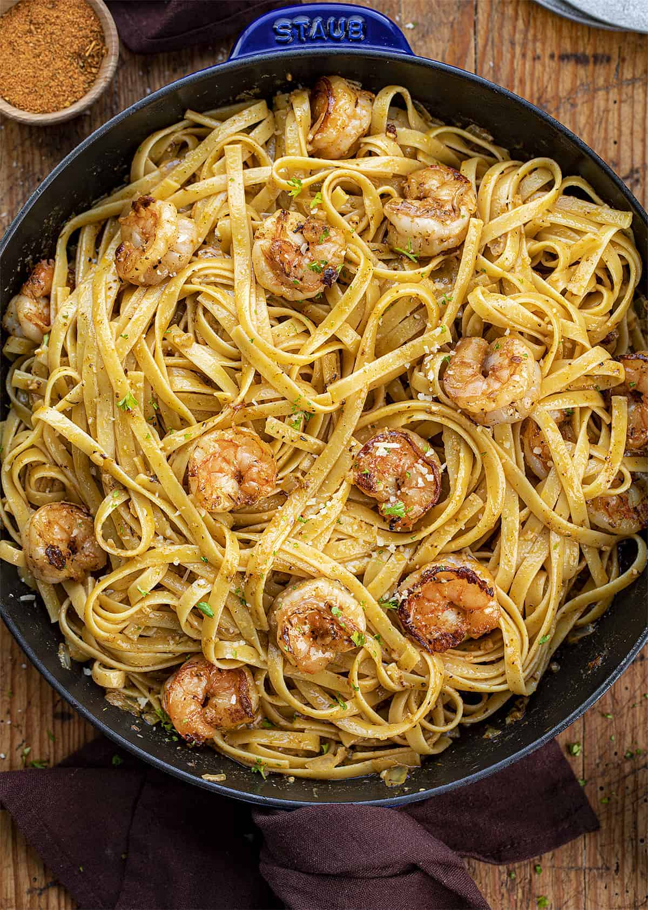

Cajun Pasta

Description:
Delicious Cajun Pasta with a creamy, spicy sauce and a hint of smoky flavor. Perfect for a hearty meal!
Ingredients:
- 8 oz (225g) penne pasta
- 2 tablespoons olive oil
- 1 pound (450g) chicken breast, diced
- 1 bell pepper, chopped
- 1 onion, chopped
- 3 cloves garlic, minced
- 1 cup (240ml) heavy cream
- 1 cup (240ml) chicken broth
- 2 tablespoons Cajun seasoning
- 1 cup (100g) grated Parmesan cheese
- Salt and pepper to taste
- Fresh parsley, chopped, for garnish
Instructions:
- Cook Pasta: Cook penne pasta according to package instructions. Drain and set aside.
- Cook Chicken: In a large skillet, heat olive oil over medium-high heat. Add diced chicken and cook until no longer pink in the center. Remove from skillet and set aside.
- Cook Vegetables: In the same skillet, add bell pepper, onion, and garlic. Sauté until vegetables are tender.
- Add Sauce: Pour in heavy cream and chicken broth. Stir in Cajun seasoning. Bring to a simmer and cook until slightly thickened.
- Combine: Return the cooked chicken to the skillet and stir in Parmesan cheese until melted. Add the cooked pasta and toss to coat.
- Serve: Garnish with fresh parsley and serve hot.